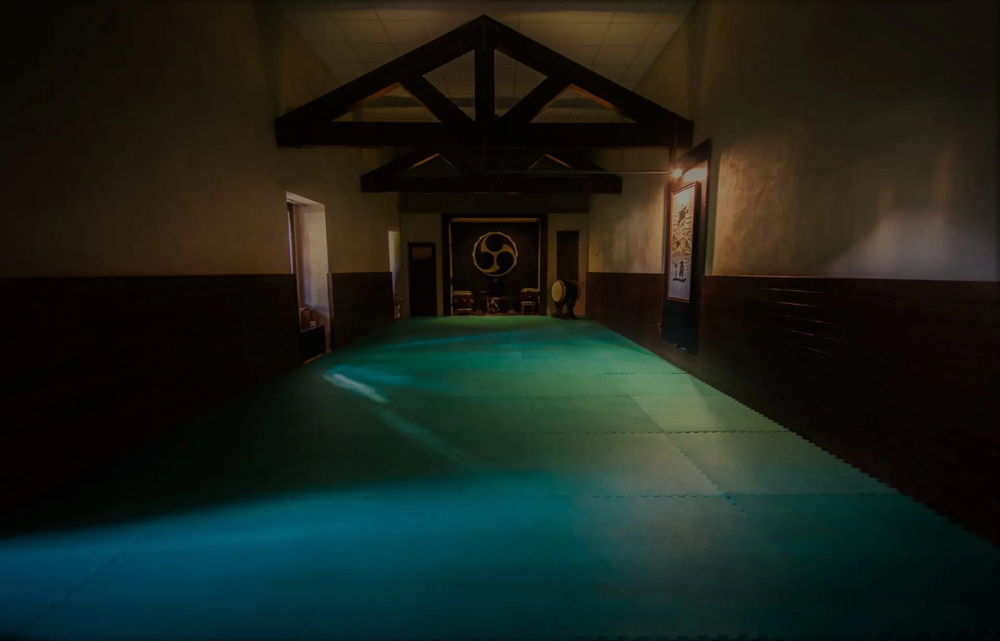
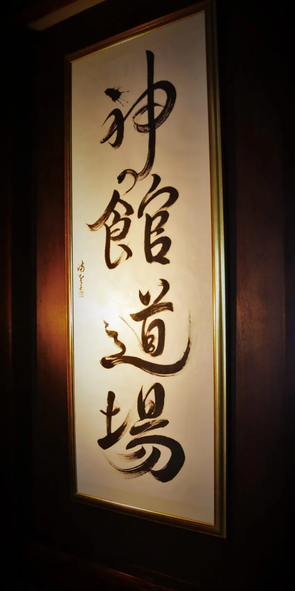
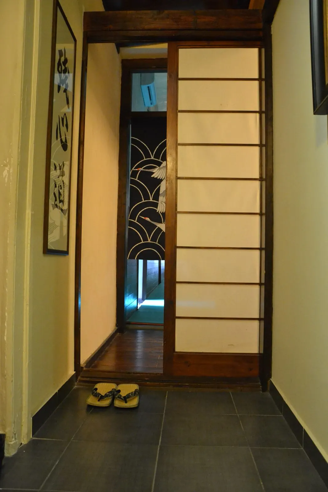
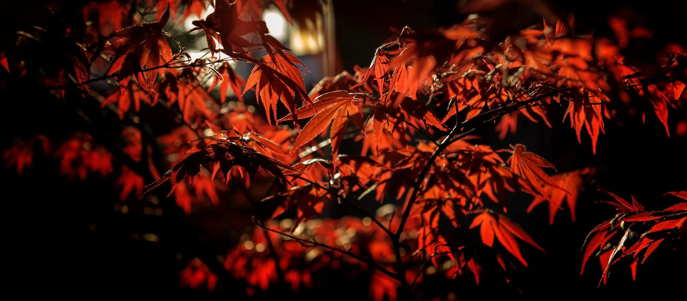
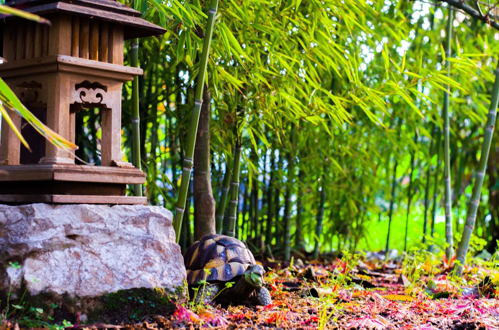
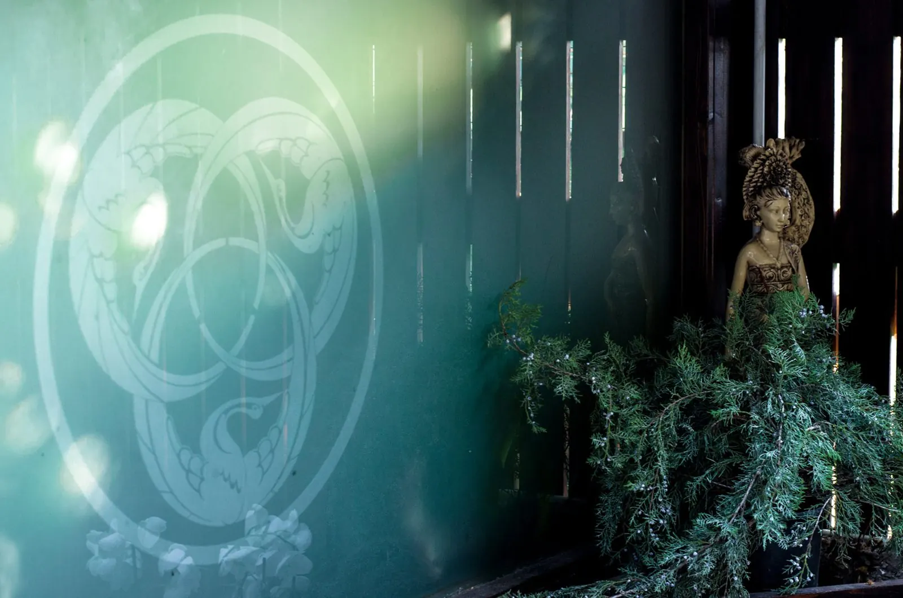

Centro per le Arti Tradizionali
Arte e conoscenza di Sé
Un autentico Dojo: un luogo di pratica della Via di conoscenza di Sé, attraverso Arti e discipline Orientali.

Un luogo fuori dall'ordinario
Armonia e bellezza contraddistinguono il nostro Dojo.
Scorri per entrare


La Scuola
Erede di una storica tradizione marziale
Il Kami No Kan è un autentico Dojo: un luogo di pratica della Via di conoscenza di Sé.
Una scuola erede della storica tradizione marziale del nostro territorio, in cui si tramandano i più alti e nobili valori marziali: lealtà e giustizia, disciplina e rispetto, determinazione e coraggio.
Qui si ricerca l'essenza più vera e profonda delle Arti Marziali, non sempre rispettata dalla straordinaria diffusione di queste discipline in Occidente.
Conosci la ScuolaLe Vie
Le Vie del Dojo
Arti e discipline Orientali volte ad uno sviluppo armonico dell'Uomo.
 01
Via Marziale
ZanShinDoKarate DoKarate Agonistico
Una Via graduale di autoconoscenza che passa attraverso il coraggio.
02
Taiko Do
La Via dei Tamburi Giapponesi
Un suono ritmico e possente, come il battito del cuore.
01
Via Marziale
ZanShinDoKarate DoKarate Agonistico
Una Via graduale di autoconoscenza che passa attraverso il coraggio.
02
Taiko Do
La Via dei Tamburi Giapponesi
Un suono ritmico e possente, come il battito del cuore.
 03
Discipline Olistiche
Katsugen UndoYogaPilates
Legare gli opposti per ricercare l'equilibrio interiore.
03
Discipline Olistiche
Katsugen UndoYogaPilates
Legare gli opposti per ricercare l'equilibrio interiore.
Bushidō
Le sette virtù
Il Bushido si fonda su sette concetti fondamentali. Scegli una virtù per leggerla.



Una scuola in cui l'Arte è vissuta come mezzo di massima espressione di Sé, di ricerca di bellezza e perfezione, di consapevolezza dell'unità con se stessi e gli altri.
Eventi
Spettacoli, Matsuri e seminari
 Dicembre 2025
SHINKA — I 20 anni della nostra Scuola
Spettacolo di Tamburi Giapponesi Taiko con gli artisti del Kyo Shin Do di Genova e gli allievi della scuola.
Dicembre 2025
SHINKA — I 20 anni della nostra Scuola
Spettacolo di Tamburi Giapponesi Taiko con gli artisti del Kyo Shin Do di Genova e gli allievi della scuola.
 Maggio 2018
Shizen — L'Eco della Natura
Concerto di Taiko al Teatro Diana di Nocera Inferiore, con la partecipazione degli AZUMA.
Maggio 2018
Shizen — L'Eco della Natura
Concerto di Taiko al Teatro Diana di Nocera Inferiore, con la partecipazione degli AZUMA.
 Giugno 2018
Taiko Kaiser Drums
Concerto internazionale a Düsseldorf, con il Kyoshindo.
Giugno 2018
Taiko Kaiser Drums
Concerto internazionale a Düsseldorf, con il Kyoshindo.
Galleria
Momenti di pratica





